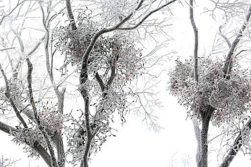

북유럽 신화에 등장하는 사랑과 미와 풍요의 여신 프로이야는 빛과 평화의 신인 아들 발데르를 깊이 사랑했다. 그녀는 불과 물과 공기와 모든 금속과 나무와 풀과 질병과 세상 모든 동물에게 발데르를 해치지 않겠다고 맹세하도록 했다. 아무도 발데르를 해칠 수 없었다. 신들은 장난삼아 발데르에게 창을 던지거나 화살을 쏘는 등 시험해 보곤 했다. 그러나 그 무엇도 발데르에게 상처를 입히지 못하고 바로 앞에서 멈추어 버렸다. 말썽꾸러기 신 로키는 발데르를 시샘해서 그를 해치기로 마음먹었다. 로키는 여자로 변신해 프로이야에게 접근해 아무도 발데르를 해치지 못하는 이유를 물어보았다. 프로이야는 자신이 세상 만물에게 맹세를 받아 낸 이야기를 자랑스럽게 들려주며 그 무엇도 발데르가 피 한 방울 흘리게 할 수 없다고 단언했다. 로키가 물었다.
"아무것도 그를 건드릴 수 없다고요?"
"그래. 아, 그러고 보니 겨우살이를 깜빡하고 넘어갔구나. 하지만 그 녀석은 너무 작고 연약해서 아무것도 해칠 수 없을 테니 걱정할 것 없단다."
로키는 그 말을 듣자마자 숲으로 달려가 가장 튼튼한 겨우살이 가지를 골라 잎과 열매를 떼어 내고 끝을 날카롭게 다듬었다. 그러고는 신들이 발데르의 힘을 시험하는 곳을 찾아가 눈먼 신 호도르에게 말을 걸었다.
"당신은 왜 장난에 끼지 않는 거죠?"
"앞을 볼 수가 있어야 말이지요. 게다가 제 손엔 뭐든 던질 만한 것도 없습니다."
"그렇다고 다들 노는 데 끼지 못한다는 것은 말이 안되죠. 던질게 없으면 이 창이라도 한번 던져 보세요."
로키는 그렇게 말하며 끝을 날카롭게 벼린 겨우살이로 만든 창을 건네주고는 발데르 바로 앞까지 이끌어 주었다. 호도르는 로키가 말해 준 방향으로 창을 던졌고, 창은 발데르의 심장을 꿰뚫어 버렸다. 깜짝 놀란 신들이 힘을 모아 발데르를 다시 살려냈다. 신들은 자초지종을 알아내어 겨우살이를 프로이야에게 데리고 갔다. 아무 죄도 없는 불쌍한 겨우살이는 땅에 발을 딛지 않는 한 절대로 누군가를 해치지 않기로 맹세했다. 겨우살이는 그때부터 땅에 뿌리를 내리지 못하고 다른 나무에 기생하며 살아가게 되었다. 